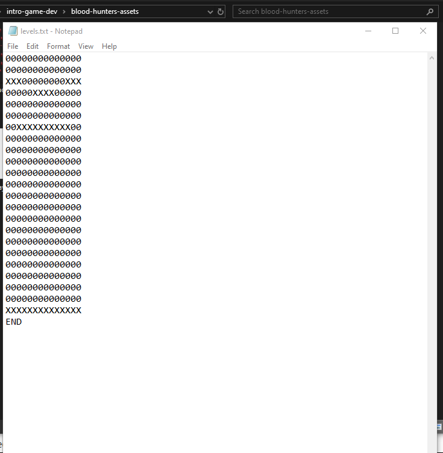

Blood Hunters: Going Beyond
Disclaimer: All art, music, and visual assets used in this project were sourced from existing games or public asset repositories. None of the assets are mine — all gameplay logic and code were written by me.
Blood Hunters was the final project for my first game development class in college, and it’s the project that really convinced me I wanted to keep making games. At the time, the class only covered the basics of GameMaker Studio 2, but I wanted to see how far I could push myself beyond what was required.
The result was a split-screen, two-player 2D 8-bit platformer built entirely in GameMaker 2. Despite its simple presentation, the game experimented with multiplayer design, time-based pressure, and procedural level selection — all things that weren’t covered in class at all.
The Core Idea
Blood Hunters is a competitive cooperative platformer where two players race upward through the level while fighting enemies along the way. Each player has a timer displayed above their head, and if it reaches zero, they lose. The only way to extend your time is to attack enemies, and if they get hit they lose time. The idea was to create constant pressure: movement, combat, and decision-making all revolve around managing time. Do you rush upward and risk running out of time, or slow down to fight enemies and regain it? It’s a very simple concept, but one that creates tension naturally — especially in multiplayer.
Going Beyond the Assignment
Because the class focused mostly on fundamentals, almost everything interesting in this project was something I had to figure out on my own. Some of the extra systems I implemented include:
- Local two-player multiplayer, using separate keyboard control schemes
- Player 1: WASD
- Player 2: Arrow Keys
- Controller support, allowing players to use gamepads instead of keyboards
- Random level selection, built by loading level layouts from text files
At the time, I didn’t fully realize it, but I had also started working with JSON-style data structures to define and load level layouts — long before I actually knew what JSON formally was. I was solving a problem first and learning the terminology later, which ended up being a recurring theme in how I approach development.
Level Generation Through Text Files
One of the systems I’m still proud of is how levels were handled. Instead of hardcoding layouts, I stored level data in external text documents. When a player progressed far enough, the game would randomly select and load a new level layout.
This approach let me:
- Reuse level logic
- Add new layouts without touching game code
- Keep progression unpredictable
Looking back, this was my first real exposure to data-driven design, even if I didn’t have the vocabulary for it yet.
This is an example of a text file used to build a level.
Platforming and Enemy Behavior
Platforming mechanics were kept intentionally straightforward, but there were still challenges. One-sided platforms, in particular, weren’t trivial to implement in GameMaker 2 and required careful collision handling to feel right. A peer actually helped me with this by suggesting I add a different collision for the players feet to interact with the platform. Enemy AI was simple but effective: enemies patrol platforms and reverse direction when reaching an edge, similar to classic Mario-style behavior. While not complex, it served the game’s pacing well and kept the focus on movement and time management instead of combat depth.
Why This Project Still Matters to Me
Blood Hunters is far from perfect, but it represents an important moment in my development as a programmer and designer. It was one of the first times I:
- Researched features independently
- Went way beyond what the scope of the class taught
- Prioritized a unique gameplay idea over technical complexity
More importantly, it showed me that I could take a vague idea and turn it into a finished, playable experience — even with limited knowledge and tools.
If I were to revisit the project today, the biggest change I’d make would be replacing all borrowed assets with original ones to avoid copyright issues. Beyond that, the core concept is something I still genuinely like, and I think it could be expanded into a much more polished experience.